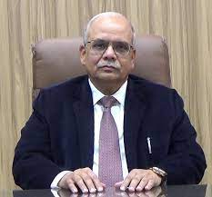

National Institute of Technology Kurukshetra(NIT Kurukshetra or NITKKR) is a public technical and research university located in Kurukshetra. In December 2008, it was accredited with the status of Institute of National Importance (INI). It is one of the 30 National Institutes of Technology established and administered by Government of India.It runs undergraduate and postgraduate in programme Engineering and Doctor of Philosophy programme in Engineering, Sciences and Humanities. The first Prime Minister of independent India, Jawaharlal Nehru, sought to develop India as a leader in science and technology. Between 1959 and 1965, with this vision, the Government founded 14 educational institutions in different regions of India. The system of competitive entry (based on merit) gave access to higher education in these institutions. Such an institution was established in 1963 in Kurukshetra as a joint enterprise of the Government of India and the Government of Punjab, India as the Engineering College, Kurukshetra (REC Kurukshetra). In 2002, all the Regional Engineering Colleges were unified by a common entrance exam. Therefore, REC Kurukshetra was renamed to National Institute of Technology under the NIT Act and was given a Deemed University status. ACADEMICS NIT Kurukshetra awards undergraduate B.Tech. in various engineering fields in a four-year programme.It offers postgraduate (PG) M.Tech. degrees in similar engineering fields as well as Physics. The M.Tech. degree is awarded after four semesters (two years) or two semesters for relevant PG diploma holders. Ph.D. research programmes are offered in engineering, sciences, humanities and social sciences as well as computer applications.As of 2006 it also offers an MBA degree. FESTIVAL Techspardha:Theme for Techspardha'18 PRIME was Realm of Possibilities. It is the main technical festival of the institute. Various technology based activities and competitions are organised and a large of students take part in these events thus adding to its popularity.
Confluence: It is the annual cultural festival of the institute. Many colleges from the state as well as from the other parts of the nation take part in Confluence. It is a three-day event and has been visited by some of the most famous artists and personalities of the county in the past few years. For Confluence’19 the theme is ‘Carnival of Heritage’.
---FOR MORE INFORMATION CLICK ON THE LINK GIVEN BELOW--- //OFFICIAL VISIT

*Director's Corner
Dr. Satish Kumar is a distinguished aerospace Scientist of national repute with outstanding contribution to the missiles and strategic systems. He has unique distinction of leading important strategic establishments over a decade and laying the foundation for futuristic technological growth in critical areas.
He served as an Outstanding Scientist and Director of Terminal Ballistics Research Laboratory (TBRL) Chandigarh, which is a DRDO laboratory that deals with development of conventional and non-conventional weapon. He has been honoured with many awards for his outstanding contributions which include the Technology Award by Ministry of Defence, Prime Minister’s Special Award for Development of Strategic Weapons and Performance Excellence award by DRDO. In 2016, he was conferred prestigious ‘Padma Shri’ award in recognition of his multi-faceted experience of more than three decades in design and development of tactical and strategic missiles involving development of path breaking technologies, denied under MTCR. He played significant role in the development of missiles and strategic systems in India.
DEGREE-GRANTING PROGRAMMES
Since the years of its existence, NIT KKR has developed a portfolio of vibrant
programmes.